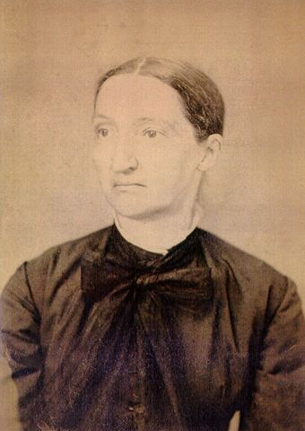

Jemima Elizabeth Hebb
1835–1903
Life events
| Born | 22 Dec 1835 · Barbour, Virginia Map |
|---|---|
| Lived | 1850 · Preston County, West Virginia Map |
| Married | 10 Apr 1856 · Frederick George Washington Ford · Barbour, Virginia Map |
| Lived | 1860 · Barbour, Virginia Map |
| Lived | 1870 · Cove, West Virginia Map |
| Lived | 1880 · Portland, West Virginia Map  |
| Lived | 1900 · Grafton, West Virginia Map |
| Died | 18 Mar 1903 · Barbour, West Virginia Map |
| Buried | Barbour, West Virginia Map |
Family
Jemima Elizabeth Hebb1835–1903

Frederick George Washington Ford1833–1921
Children
 George Michael Ford1871–1941
George Michael Ford1871–1941
Photos
Jemima Elizabeth Hebb
Frederick George Washington Ford
Jemima Elizabeth Hebb
Frederick George Washington Ford
Jemima Elizabeth Hebb

Jemima Elizabeth Hebb
Frederick George Washington Ford